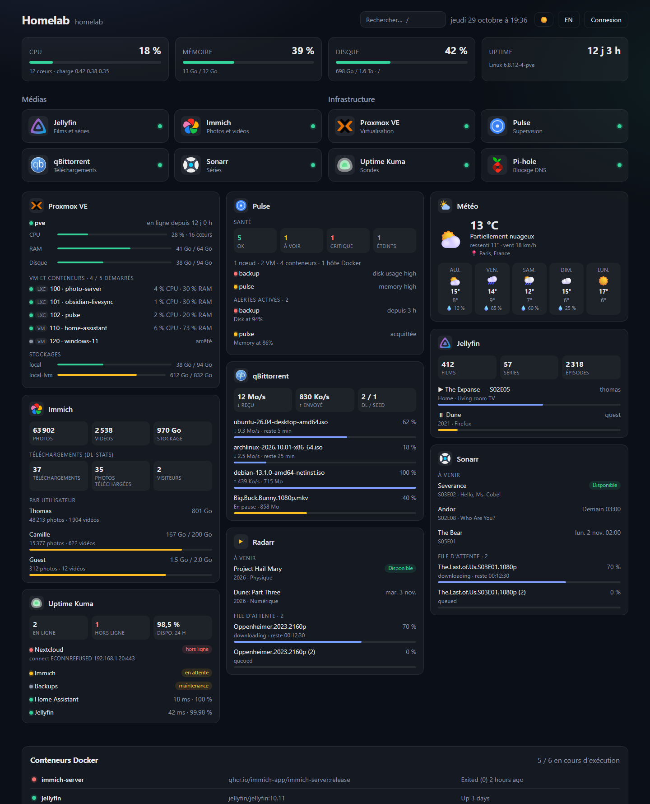
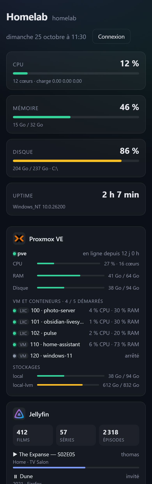

Tuiles d'applications
Tes services classés par catégories, avec leurs icônes et un indicateur en ligne / hors ligne vérifié par le serveur.
Server Dashboard réunit tes services, l'état de ton serveur, tes conteneurs Docker et tes médias dans un tableau de bord léger que tu héberges toi-même. Une commande Docker suffit.

L'essentiel d'un dashboard de homelab, sans base de données ni étape de build. Une seule image Docker.
Tes services classés par catégories, avec leurs icônes et un indicateur en ligne / hors ligne vérifié par le serveur.
CPU, mémoire, disque et uptime en temps réel, avec un code couleur dès qu'une ressource sature.
La liste de tes conteneurs et leur état. Démarre, arrête ou redémarre-les en un clic une fois connecté.
Ajoute, modifie et réordonne tes apps par glisser-déposer, directement dans l'interface, protégée par mot de passe.
Tes clés API et mots de passe restent sur le serveur : ils ne sont jamais envoyés au navigateur.
Node.js + Express et du HTML/CSS/JS sans framework. Facile à lire, à modifier et à faire évoluer.
Branche tes applications et suis ce qui se passe sans ouvrir dix onglets.

Sur n'importe quel serveur Linux : VPS, Raspberry Pi, conteneur LXC Proxmox, NAS…
Debian 12+ ou Ubuntu 22.04+. Installe Node.js si besoin, crée un service systemd et affiche ton mot de passe admin. Relance la même commande pour mettre à jour.
curl -fsSL https://raw.githubusercontent.com/Circule-studio/server-dashboard/main/packaging/install.sh | sudo bash
git clone https://github.com/Circule-studio/server-dashboard.git cd server-dashboard
cp .env.example .env nano .env # remplace "change-moi"
docker compose up -d --build
Puis ouvre http://IP-DU-SERVEUR:7575, clique sur Connexion puis Éditer pour ajouter tes services.
Où en est le projet et ce qui arrive. Chaque point est une issue GitHub : choisis-en une et lance-toi !
Une idée qui manque ? Propose-la dans une issue.
Le projet est jeune et cherche des contributeurs, surtout pour l'interface : thème clair, version mobile, nouveaux widgets. Des faux services (npm run mocks) te permettent de tout tester sans rien installer.